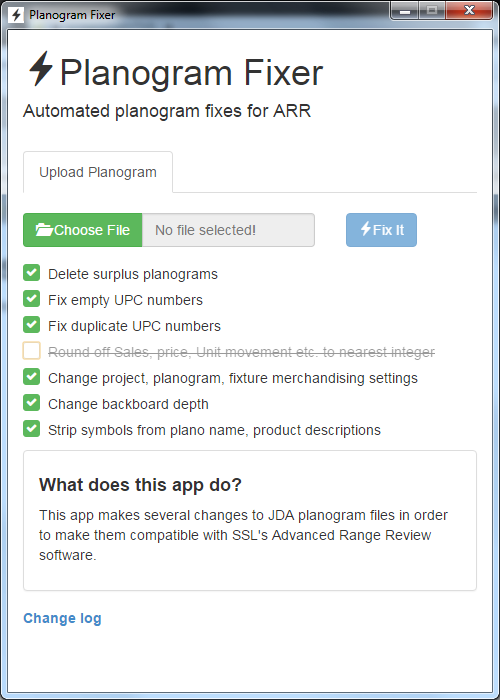
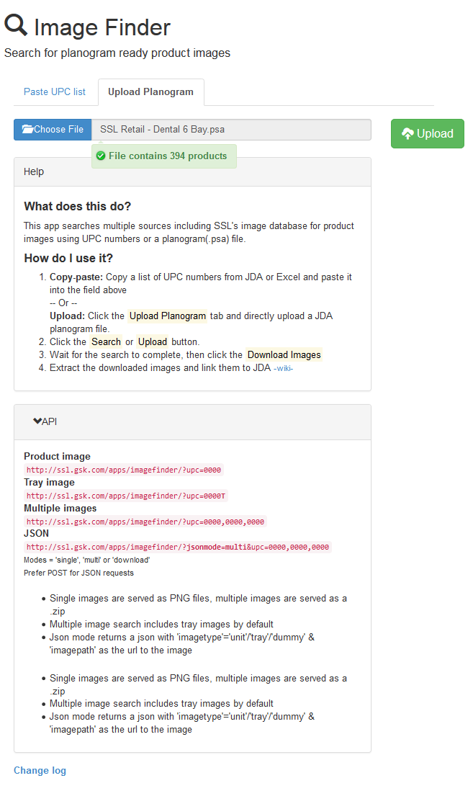
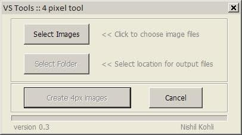
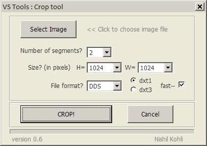

Hybrid mobile app that lets users search through thousands of Marvel characters and comics.
Live demo GithubWebapp for managing volunteer shifts at Freegeek Vancouver.
Live demo GithubComparison tool that looks up current pricing from uber and traffic conditions from Google to provide a cost comparison.
Live demo Android appWebapp for managing rooms and technology booking for a research facility I used to work at.
Reads a quasi-CSV file format and changes things to address compatibility issues
Originally written to take care of ‘can you find me the images for..’ emails but has now grown to become the main interface for a database of product images. Extended to include an API that other pieces of software can use to fetch the images.
Reads a ‘planogram’ file and creates a 3D shelf on the basis of it. Makes use of the brilliant Touchscript library to add mulitouch gestures. Allows user(s) to do a redesign of a store fixture without any heavy lifting!
Similar to the touchshelf in functionality but built as a webapp for smaller screens. Renders a planogram on a HTML5 canvas.
Developed for a team of 3D designers creating virtual supermarkets(Walmart, Tesco etc). The 3D environments were integrated with a game engine ( Virtools) and used for simulating journeys through supermarkets using virtual reality.
The tools helped keep things organised within the scene and cut down on repetitive tasks like loading in elements from proxys and pupulating multisub materials from a series of images etc.
Developed for the same team as the Maxscript tools above. These helped automate cropping, resizing and naming of textures. The tools used binaries from Nvidia’s texture tools to create the DDS files.
 